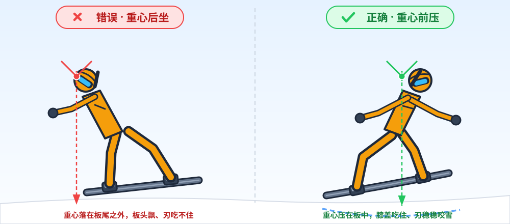
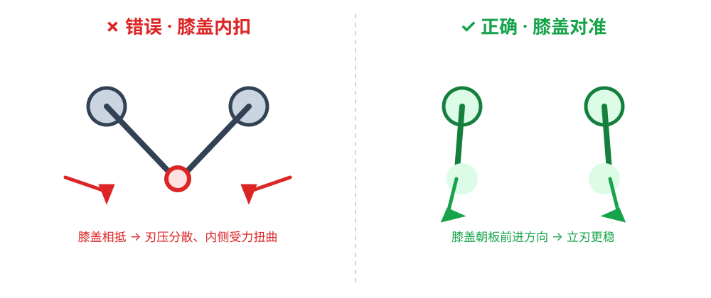

韩式刻滑·基本姿态与发力方式
刻滑韩式姿态发力专项
韩式刻滑：基本姿态与发力方式
承接体系篇 韩式体系，本节进入技术细节。本文聚焦「基本姿态」与「发力方式」两个地基，为 刃角与压力、团身与压缩展开 打底。底层坐标见 四条主轴。
阅读顺序建议：先在平地把"姿态"摆标准 → 再理解"发力从哪来" → 最后把这些在滑行里串成一条链。每一段我都标出了"该出现的感觉"，对自查很有用。
1. 基本姿态
通用起点（aligned / athletic）
| 要点 | 说明 | 对着自查 |
|---|---|---|
| 脚距（Stance） | 与肩同宽或略宽；刻滑常用较宽站距以利侧向稳定 | 站开后两腿能自然下蹲，不夹腿 |
| 屈膝屈髋 | 深度"能说话也能再沉"的可调状态 | 停顿 30 秒不酸不僵 |
| 重心居中偏前 | 静态稍前倾，为前刃预势，不反坐 | 脚尖能感到轻微贴合 |
| 沿线对齐（Alignment） | 膝→髋与板纵轴成一平面，避免"O 形/外掀" | 照镜子侧面，头肩髋膝踝成一条线 |
纠错雷区：最常见的姿态问题是"塌腰驼背（把髋向后坐太多）"和"腰带扭转（把上身转向板外）"。前者让重心偏后、易坐板；后者让上身松散、难控制刃。停在"能说话也能沉"的可调程度，是最省力的起点。
韩式刻滑的「深蹲基准」
韩式尤其追求低重心 + 屈髋下压（高折髋），即所谓"屈髋深蹲"：膝盖微微向内压、躯干略俯，把重心「埋」进刃里。这不是"坐回去"，而是一种向前、蓄势待发的低姿态——为后续团身/压力做储物。
正确 vs 错误的深蹲基准：
- ✅ 重心在前脚掌·脚弓上方，屈髋充分、重心略俯、眼睛看向弯内（不看刃）。
- ❌ 重心落在脚跟、骨盆直立、眼睛盯板面 → 会"坐板"并失去前刃的咬合。
示意图：重心位置 —— 后仰（错误） vs 前压（正确）

示意图：膝盖朝向 —— 内扣（错误） vs 对准前进方向（正确）

图文示例｜刻线动作中"低重心压入"的姿态：

图片来源：Wikimedia Commons（自由授权）· 查看原图
{kind=link}
2. 发力方式（发力来源）
下肢主导，不是腰
- 脚踝＋膝盖：用脚踝小幅下沉、膝盖向侧向带动，来把重心压向刃；比"用腰部扭"更有反馈与弯弧。
- 重心引导：整条骨盆向弯内侧倾斜，借助重力，而不是靠手或腰去别。
- 发力的感觉：像"用大腿把这可刃往下推"，不是"用手把自己甩过去"。
「脚（大腿）→ 膝 → 髋内」的发力顺序
一个好的刻滑，力从脚跟/脚掌（腿腱）→ 膝盖 → 髋内的重心逐级上传，上半身保持静态（counter），把确定性传给板再压进雪里。不要从上身开始发力，也不要把用力止于膝——要"传到髋再落到刃"。
「压刃」的发力体验（分刃讲）
| 刃 | 怎么压 | 体会 |
|---|---|---|
| 前刃（脚尖侧） | 向前板尖"顶小腿"，把身前整体推压向前 | 仿佛把全身重量压向前刃 |
| 后刃（脚跟侧） | 顶后腿、重心向后板尾方向压 | 把上一弯的"预压"延续到后刃 |
关键心法：加压要持续、平缓，而不是瞬间猛踩"跺"下去。一"跺"会让刃瞬间锁定、容易失控；要做的是稳定且持续地向刃施加压力，让它一直咬住雪。
图文示例｜立刃后持续压刃的稳定滑行

图片来源：Wikimedia Commons（自由授权）· 查看原图
{kind=link}
3. 教学 cue 一览（自查 + 教别人）
| cue | 对应 | |
|---|---|---|
| 「站像运动员，膝盖能说话」 | 找基础姿态的"可调节"感 | |
| 「重心交给弯的那只后脚」 | 重心内移 | |
| 「用脚踝收，不是用腰扭」 | 发力来源 | |
| 「压住 / 蓄住」 | 持续压 = PRESS（配合 [[core-models | 加压]]） |
| 「上身安静，肩往弯内让一让」 | 反扭/上半身稳定 |
4. 进阶：从「姿态」到「动态」
把上面的静态要素放进滑行就是"动态";
- 先在地把姿态钉稳（不弯腰、不低头看刃、不反坐）→ 再在滑行中对「刃 + 重心 + 压力」做联动（见 edge-pressure.md）。
- 高速伸弧时，自然过渡到更深的 团身/压缩伸展。
- 自查三步：看刃前先抬头看下面走线；滑完一回头看自己的刻痕是"线"还是"面"；屈膝始终可调、不锁死。
与 JSBA 的关系
- 两者在基本姿态层面几乎一致（韩式基本姿态 ≈ JSBA 的基础）。差异在用力重点：韩式更强调「持久压刃 / 深蹲」，JSBA 更强调「均衡制控 / 搓滑控制」。详见 两者痛点对比。
next
- 刃角与压力管理
- 团身与压缩伸展